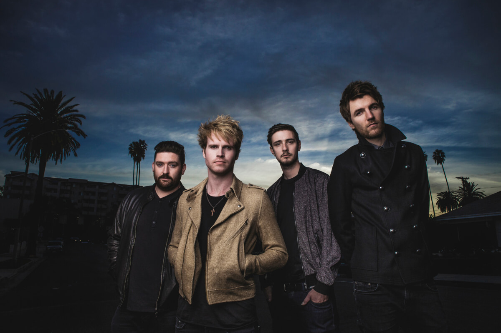
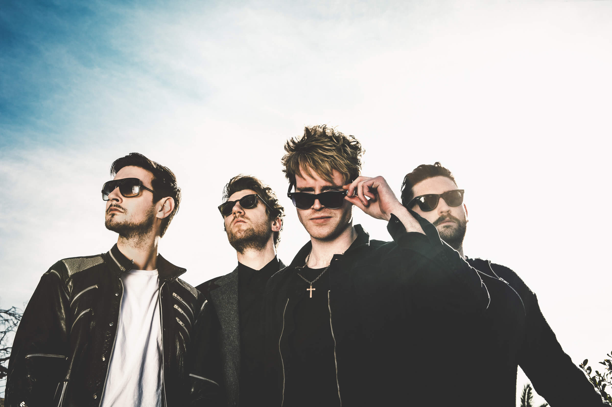

Kodaline - одна из самых перспективных групп Ирландии. Группа образовалась в поселке Сордс, расположенным в 15 км от Дублина, где Стив Гарриган и Марк Прендергаст жили по соседству. Друзья учились в одной школе и принимали участие в различных конкурсах исполнителей. Но школьных конкурсов им было мало, и они начали поиски барабанщика, который бы им подошел. Через несколько месяцев они познакомились с Винсентом, который также жил в Сордсе - тогда и начала формироваться группа 21 Demands. Позже в команду был принят бас гитарист Джеймс Боленд.  Музыканты начали свою историю в середине нулевых под названием 21 Demands без явных наполеоновских планов. Но их сингл «Give me a minute» возглавил ирландский еженедельный чарт «Irish Singles Chart», и, как любят говорить журналисты, все завертелось. В 2012 году группа сменила название на Kodaline и выпустила первый мини-альбом The Kodaline EP. Надо признать, что ирландская рок-музыка всегда стояла особняком. Пожалуй, поэтому в ней есть особая пронзительность и холодный шарм островов. Песни Kodaline цепляют, трогают до глубины души. Их не устают сравнивать с ранними Coldplay, с теми самыми по-юношески наивными и романтичными.  Музыка Kodaline - это нежная меланхоличность в сочетании с красивым вокалом. Их приятно слушать в камерной обстановке клуба, мысленно отправляясь за холодное море, в мир фантазий и творчества. Kodaline – это четверо друзей детства, которые не собирались становиться рок-звездами и которым просто нравилось играть музыку. Но история распорядилась иначе — сейчас в их багаже выступления на крупнейших музыкальных фестивалях, два успешных лонгплэя, хвалебные отзывы прессы и армии поклонников. А чтобы обеспечить свою армию поклонников, запишите кавер на песню любого ирландского музыканта или группы, снимите это на видео, опубликуйте в youtube, а ссылку пришлите в личные сообщения на странице Просто Радио в Facebook https://www.facebook.com/ProstoRadi.O.NewRock/ или на irishtrue.vgorode.ua. Все это нужно сделать до 5 декабря. А главный приз - Рокстар Уикенд в столице Ирландии!
конкурс